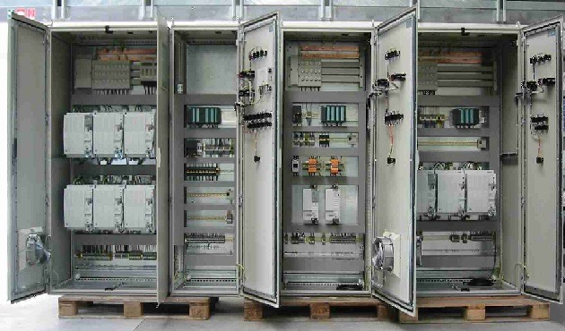
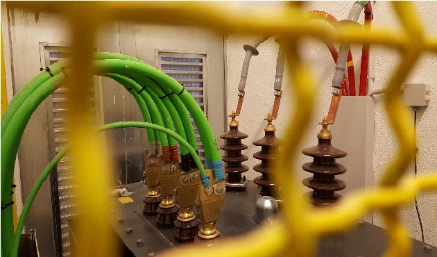

Mantenimiento de centros de transformación
Revisión general anual del centro de transformación, coordinación de la inspección periódica obligatoria por un OCA y corrección de las anomalías detectadas.
Mantenimiento de CTMontaje · Mantenimiento · IngenieríaErmua (Bizkaia) · Desde 1967
Empresa instaladora autorizada con ingeniería propia. Montamos, mantenemos y legalizamos instalaciones eléctricas, centros de transformación y automatismos.
Servicios
Egondo integra en un solo proveedor todo lo que tiene que ver con la electricidad y la electrónica de una empresa o un edificio, con un único interlocutor ante el cliente.
De 1 kV hasta 36 kV. Líneas subterráneas y aéreas y centros de transformación.
Revisión general anual del centro de transformación, coordinación de la inspección periódica obligatoria por un OCA y corrección de las anomalías detectadas.
Mantenimiento de CTInstalación completa de celdas, transformadores y líneas de media tensión hasta 36 kV, con equipos de Ormazábal, Schneider Electric, Siemens, Inael o Mesa.
Alta tensiónAdecuamos centros de transformación en desuso a la normativa vigente para legalizarlos ante Industria y darlos de alta con la compañía eléctrica.
Disponemos de transformadores de potencia que se pueden instalar rápidamente en caso de avería, también en alquiler si no están incluidos en el contrato de mantenimiento.
Hasta 1000 V. Empresa autorizada en todas las modalidades, nº 48/EIBT-268.
Electrificación de pabellones, acometidas a máquinas nuevas, nuevos puestos de trabajo, reformas y traslados de oficinas.
Baja tensiónBúsqueda y reparación de averías, maniobras de seguridad, finales de carrera, PLC y copias de seguridad de programas.
Iluminación LED y convencional, y alumbrado público para organismos públicos, urbanizaciones y polideportivos.
Instalaciones en edificios públicos, corrientes de obra, reformas e instalaciones de obra en viviendas.
Detectar problemas antes de que se conviertan en una parada, y gastar menos energía.
Estudios termográficos de centros de transformación e instalaciones de baja tensión, con informe de puntos calientes y actuaciones recomendadas.
TermografíasAnálisis de la factura eléctrica y del reparto de potencias, estudios de eficiencia en baja tensión, LED, fotovoltaica y monitorización de la instalación.
Eficiencia energéticaLa parte eléctrica, la electrónica y las comunicaciones con un mismo proveedor.
Programas de PLC a medida, modificación de secuencias existentes, pantallas táctiles, montaje de cuadros eléctricos y esquemas.
AutomatizaciónInstalaciones según ICT, cableado estructurado de red certificado, fibra óptica, wifi, racks de comunicaciones y SAI.
TelecomunicacionesMantenimiento reglamentario
Las instalaciones de alta tensión y muchas de baja tensión tienen revisiones obligatorias. Nos encargamos del mantenimiento, coordinamos la inspección y corregimos lo que haga falta.
El desconocimiento no exime de cumplimiento.
Empresa
Javier Garro fundó Egondo en 1967 con una idea sencilla: dar un servicio cercano, en el que el cliente pueda confiar en su proveedor eléctrico. Desde 2008 la dirige su hijo, Aitor Garro, que trabajó durante años a su lado.
Hoy montamos, mantenemos y ponemos en marcha instalaciones de alta y baja tensión para industria y edificios, con un departamento de ingeniería propio que hace los proyectos, los planos y las legalizaciones.

Visitamos la instalación, vemos qué necesita y le damos un presupuesto.
Hacemos el proyecto, los planos y la legalización ante Industria.
Instalamos y ponemos en marcha con nuestro propio equipo.
Revisiones preventivas para evitar averías y paradas.
Obras
Algunas de nuestras instalaciones. [confirmar que son obras propias, añadir ubicación y fotos en alta resolución]

Montaje de celdas y transformadores. [ubicación y año]

Conexiones de media tensión. [detalles]
Montaje e instalación de cuadros eléctricos. [detalles]
Por respeto a la privacidad de nuestros clientes, no publicamos sus nombres. Estos son los ámbitos en los que trabajamos.
Zona de servicio
A pie de la N-634, a la entrada de Ermua viniendo de Zaldibar, o a la salida hacia Bilbao, en la subida al puerto de Areitio. Con acceso directo a la autopista.
Al cargar el mapa, Google puede usar cookies. Abrir en Google Maps.
Sí. El titular de un centro de transformación debe tener contratado su mantenimiento con una empresa instaladora autorizada y pasar una inspección periódica por un Organismo de Control Autorizado (OCA) cada tres años, según el Reglamento de alta tensión (RD 337/2014). El desconocimiento no exime de cumplimiento: no cumplirlo puede acarrear responsabilidades. [CONFIRMAR redacción con el cliente]
Es la inspección reglamentaria que realiza un Organismo de Control Autorizado, una entidad externa e independiente. Su informe favorable permite mantener el suministro. En alta tensión es cada tres años y en las instalaciones de baja tensión que lo requieren, cada cinco. Nosotros la coordinamos y corregimos las anomalías que señale el informe.
Disponemos de transformadores de potencia para nuestros clientes que se pueden instalar rápidamente en caso de avería. Si el servicio no está incluido en el contrato de mantenimiento, también se puede alquilar. [CONFIRMAR potencias disponibles y tiempos]
Para encontrar calentamientos anómalos en conexiones, cables y equipos antes de que provoquen una avería o una parada de producción. Con una cámara termográfica revisamos los puntos acordados y entregamos un informe con los valores medidos y las actuaciones recomendadas.
Sí. Tenemos un departamento de ingeniería propio que hace planos, esquemas eléctricos, proyectos, boletines y legalizaciones de las instalaciones que realizamos o regularizamos, y que dirige la obra y la corrección de deficiencias.
Sí. Estamos en Ermua, junto a la N-634 y con acceso directo a la autopista, a menos de una hora de Bizkaia, Gipuzkoa y Álava. Damos servicio a nivel local, provincial, autonómico y estatal.
Sí. Además de industria y edificios, hacemos instalaciones en viviendas (reformas e instalaciones de obra), terrenos particulares e instalaciones rurales.
Contacto
| Lunes a viernes | 8:00–13:00 · 14:00–18:00 |
|---|---|
| Sábado y domingo | Cerrado |
Sin compromiso. Le respondemos en horario de oficina.